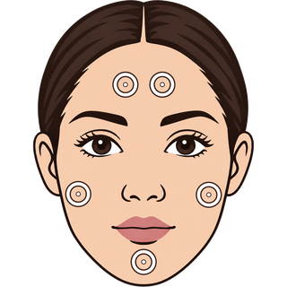

Click the eyedropper below, then click skin (forehead, cheek, chin…). Then Analyze or Apply.
Separate highlight / shadow points
Keep whites neutral (last sampler is on white)
Replace previous Skin Tone layer
Analyze
Apply